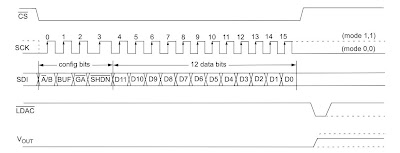
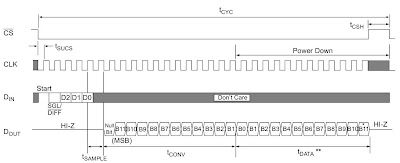
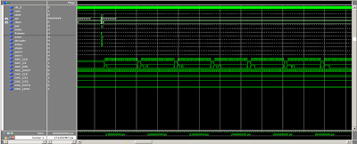
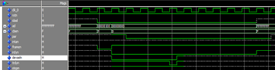

PCI Card Project Episode 3: FPGA Design
Overview
First of all, we need to specify how to control the various I/Os. For example, how will the PC control the GPIO, and which address should it access? Therefore, we must define the memory map first. Below is the mapping I have defined myself:
| Offset address | Function |
|---|---|
| 0x0000_0000 | Digital I/O CH1 ~ Digital I/O CH16 |
| 0x0000_0004 | Digital I/O CH1 ~ Digital I/O CH16 Mode setting (0: Input, 1: Output) |
| 0x0000_0100 ~ 0x0000_011C | ADC CH1 (ADC Enable: 1 = single-shot, 2 = continuous) ~ ADC CH8 |
| 0x0000_0200 ~ 0x0000_020C | DAC CH1 ~ DAC CH4 |
| 0x0000_0210 | DAC Output Enable |
| 0x0000_0300 | LED |
| 0x0000_0400 | FPGA Version |
Next, to communicate with the PC, we must use the PCI bus, which can be designed in two ways:
- Use the IP core provided by Altera.
- Write the PCI interface using VHDL or Verilog from scratch by ourselves.
I chose the second option. The reason for writing it ourselves is to avoid license issues when referencing this board later. However, when I say writing the VHDL code from scratch, I didn't write all of it myself. I happened to find a book teaching VHDL design that included example code. The link is here: http://www.cqpub.co.jp/hanbai/books/33/33361.htm. It might be a bit challenging since it is in Japanese, but that's fine; we only need to use the PCI interface part of the code.
Design
The design concept is divided into 4 main parts:
- PCI interface: For interfacing with the PCI bus
- DAC controller: To control the MCP4922
- ADC controller: To control the MCP3208
- DIO controller: To control the GPIO
1. PCI Bus Interface
This section is the most important and complex. Luckily, we got the sample code PCI_TGT8.VHD from the book, which acts as a PCI Target device. It translates the communications on the PCI bus into a simpler Local bus that is easy to work with.
This code handles all Configuration Read/Write, Memory Read/Write, and I/O Read/Write operations on the PCI bus for us, translating them into Local bus signals so that we can easily connect them to other modules we design.
Below is a snippet from PCI_TGT8.VHD declaring the ports for the Local bus:
-- [JoXMs (Local Bus Signal Pins)
MEM_ADRS : out std_logic_vector(23 downto 0); -- AhXoX (Memory address bus)
MEM_DATA : inout std_logic_vector(31 downto 0); -- f[^oX (Memory data bus)
MEM_CEn : out std_logic; -- SRAM0`3 /CE (Chip Enable)
MEM_OEn : out std_logic; -- SRAM0`3 /OE (Output Enable)
MEM_WE0n : out std_logic; -- SRAM0 /WE (Write Enable)
MEM_WE1n : out std_logic; -- SRAM1 /WE
MEM_WE2n : out std_logic; -- SRAM2 /WE
MEM_WE3n : out std_logic; -- SRAM3 /WE
As seen in the code, we get the Address bus (MEM_ADRS), Data bus (MEM_DATA), and control signals (MEM_CEn, MEM_OEn, MEM_WEn). We will use these signals to decode the addresses and select which IP core (DAC, ADC, or DIO) to interact with.
2. DAC_IP
This module is responsible for receiving values sent from the Local bus and using them to control the MCP4922 DAC chip, which uses an SPI interface. The file used is DAC_CTRL.vhd.
entity DAC_CTRL is
port (
CLK : in std_logic ;
RST_L : in std_logic ;
-- system interface
iDACData : in ODAC_DATA ;
iWriteREQ : in std_logic ;
ipWriteFinish : out std_logic ;
-- DAC interface
MOSI : out std_logic ;
SCLK : out std_logic ;
CS_L1 : out std_logic ;
CS_L2 : out std_logic ;
LOADDACS_L : out std_logic
);
end DAC_CTRL;
When the iWriteREQ signal is asserted, the module takes the data from iDACData and generates the SPI signals (MOSI, SCLK, CS_L1, CS_L2) to transmit to the DAC chip.

3. ADC_IP
This module is responsible for controlling the MCP3208 ADC chip, which also uses an SPI interface. The file used is ADC_CTRL.vhd.
entity ADC_CTRL is
port (
CLK : in std_logic ;
RST_L : in std_logic ;
-- system interface
iADCData : out ADC_DATA ;
iReadREQ : in std_logic ;
ipReadFinish : out std_logic ;
-- ADC interface
MISO : in std_logic ;
MOSI : out std_logic ;
SCLK : out std_logic ;
CS_L : out std_logic
);
end ADC_CTRL;
When the iReadREQ signal is asserted, the module commands the ADC chip via SPI (MOSI, SCLK, CS_L) to start the conversion. Once the conversion is complete, the data is read back through MISO and outputted to iADCData.

4. DIO_IP
This is the simplest module, responsible for controlling the General Purpose I/O directly. The file used is PIO_CTRL.vhd.
entity PIO_CTRL is
port (
CLK : in std_logic ;
RST_L : in std_logic ;
-- system interface
iPIOCtrl : in std_logic_vector(15 downto 0) ;
iPIOBufferIn : out std_logic_vector(15 downto 0) ;
iPIOBufferOut : in std_logic_vector(15 downto 0) ;
-- PIO interface
PIO : inout std_logic_vector(15 downto 0)
);
end PIO_CTRL;
iPIOCtrl: Used to define the direction of each pin as either Input or Output.iPIOBufferOut: The data to be written to the Output pins.iPIOBufferIn: The data read from the Input pins.PIO: The port connected directly to the actual FPGA pins.
Simulation
For simulation, we did not write the entire testbench ourselves; instead, we modified Altera's testbench. The primary file we edited is mstr_tranx.vhd, which acts as a PCI Master to generate transactions to test our PCI Target.
We can write to or read from the memory based on the addresses defined in our Memory map using the mem_wr_32 and mem_rd_32 procedures provided in the testbench.
Example of writing data to various addresses:
---------------------------------------------------
-- 32 bit memory write(Address, Data, Number of Dwords)
-- mem_wr_32(x"10000000",x"00000001",1);
---------------------------------------------------
-- เขียนค่า 0x12345678 ไปยัง address ของ Digital I/O
mem_wr_32(bar0_data,x"12345678",1);
-- เขียนค่า 0x22222222 ไปยัง address ของ Mode setting
mem_wr_32(bar0_data+4,x"22222222",1);
-- เขียนค่าไปยัง DAC channel 1
mem_wr_32(bar0_data+x"200",x"ffffffff",1);
-- สั่งให้อ่านค่าจาก ADC channel 1
mem_wr_32(bar0_data+x"100",x"00000000",1);
| bar0_data | 0x0000_0000 | Digital I/O CH1 ~ Digital I/O CH16 |
|---|---|---|
| bar0_data+4 | 0x0000_0004 | Digital I/O CH1 ~ Digital I/O CH16 Mode setting (0: Input, 1: Output) |
We can observe the simulation results from the waveforms in the simulator to verify whether each of our IP cores functions correctly as expected.


Note
All example code can be downloaded at: https://github.com/wichayen/ariesboard